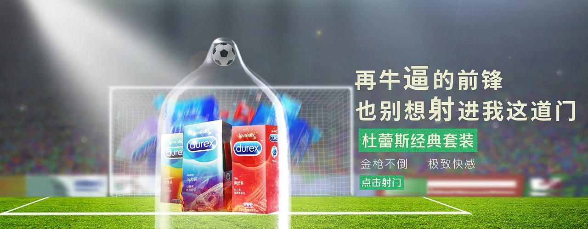
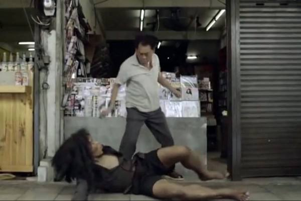
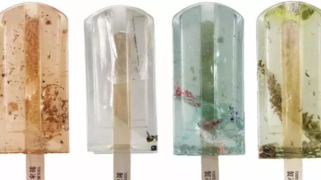

广告说白了，是一种为了达成某种特殊需要的宣传手段，是广告主向消费者传递的信息。商业广告的最终目的，是达成盈利。

近些年，常听到人们在探讨，什么是好的广告创意?很多人听到广告这个词，就反感。看电视，看到广告要跳台。手机上看神剧，看到广告买会员也要过滤掉广告。
更有些平台甚至利用消费者反感广告这个行为，玩出赚钱新花样：视频开始前，插播广告您不是烦么?那几秒后，按住广告页面的小话筒图标，大声喊出插播的品牌名称就可跳过广告……
难道，广告就真的那么烦么?其实，广告本身并不烦。烦的是，不好的广告创意浪费了消费者的时间。
品牌策划公司对三个案例来解读，内容营销——营销创意，带读者朋友们看看，好的广告创意如何俘获消费者的。
红星美凯龙年度温情大片：一个爱家的故事
从2010年开始，红星美凯龙就发起「爱家日」主题活动，旨在让更多人意识到家的重要性，鼓励人们多花些时间陪伴家人。除了透过通路营销打响「爱家日」的影响力，红星美凯龙一步步构建出爱家日活动的主基调，展现出对于「家」这个符码的重新理解，以及对于「爱家」这个主题的深刻思考。这种背景下，「爱家，因为家爱我们」应运而生。红星美凯龙在短片中传递出的是一份精神礼物：我们之所以爱家，并非只因它为了我们一直在变;而是因为，家，一直不变地爱着我们。我们之所以爱家，是因为，爱家，从不需要像爱朋友那样，去证明什么;像爱恋人那样，去承诺什么;像爱事业那样交换什么。而我们对家的爱也是自然而然的，从年少到年老。而家接受我们的爱，也始终不离不弃。

泰国广告：《再也不回来的乞丐》
一家书店的老板每天开门营业时，总会发现门前躺着一个脏兮兮的流浪汉。由于担心他妨碍自己做生意，书店老板对他又是泼水又是打骂，想将他赶走，可第二天流浪汉还是会来。
终于有一天，流浪汉没有出现。书店老板大为不解，他想到店门前安装有监控摄像头，于是调来视频查看究竟，结果发现，这个流浪汉在书店门前过夜时，会打扫门前的垃圾，赶走欲往门上小便的醉汉……后来，两个贼想撬开书店的门偷东西，流浪汉上前制止，被这两个恼羞成怒的家伙用刀捅死。
看到这里，书店老板泪流满面。这时画面上打出字幕：“有些事实，是你的眼睛看不到的。”接着画面一转，出现了几款监控摄像头。
这则广告虽然最后落在宣传摄像头的点上，但也向大家阐述了一点：“有些事实，是你的眼睛看不到的。”用动人的故事告诉我们做人做事，别只看表面现象，应该多了解背后的事实。

100个“污”冰棒
三个台湾的女大学生，花了整整一年时间，取台湾100个被污染的水源，制作成了棒冰模型。每个棒冰都有对应编号，53号是东石渔港口味，内有废渔网和烟头;95号是花莲溪口味，内含废木材和纸浆。
“像水污染、环保这样沉重又宏大的议题，如果不是切实对人们生活造成触目惊心的伤害，恐怕很难触动现代人麻木冷漠的心灵。”
而这一独具巧思的设计，被分享到网络，瞬间吸引185万人观看，25000人点赞。传播效果非常显著。
广告创意营销不能随心所欲地去玩“新”、“奇”。一旦“新”得过分，“奇”得离谱，会使人对广告的理解带来障碍。广告创意作为一种文化整合，不仅要着眼于经济效益，品牌策划公司认为还要着眼于社会效益，并且不可避免地要承担相应的社会责任。

济南海右博纳品牌营销咨询有限公司
Copyright 2001-2019 All Rights Reserved Sivibrand.
王伟品牌顾问微信